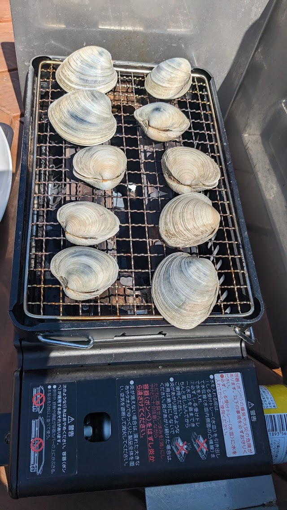
| 営業時間 | 月・木・金・土・日 10:30〜15:00 |
|---|---|
| 定休日 | 火・水曜 |
| 住所 | 千葉県船橋市日の出１丁目２２−１ 船橋漁港内 |
| 予約 | 要確認 — ☎ 047-434-0668 ／ 公式サイト |
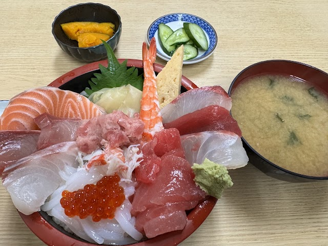
| 営業時間 | 月・火・木・金・土 7:00〜12:30 |
|---|---|
| 定休日 | 水・日曜 |
| 住所 | 千葉県船橋市市場１丁目８−１ 卸売市場 |
| 予約 | 要確認 — ☎ 047-423-2489 |
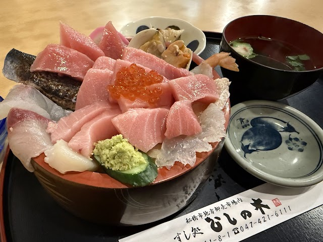
| 営業時間 | 月・火・木・金・土 7:00〜13:00 ／ 水 9:00〜13:00 |
|---|---|
| 定休日 | 日曜 |
| 住所 | 千葉県船橋市市場１丁目８−１ |
| 予約 | 要確認 — ☎ 047-421-6111 |
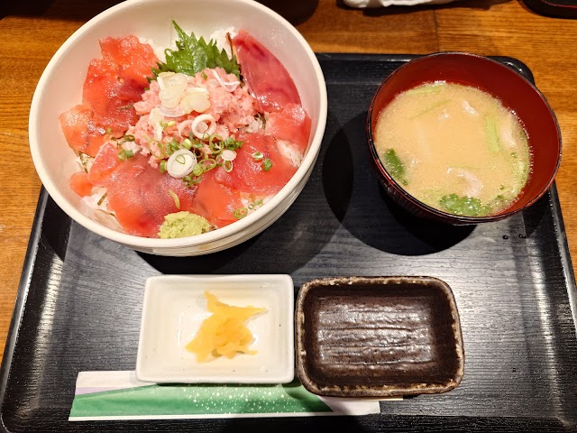
| 営業時間 | 月・火・水・木・金 11:30〜22:00 |
|---|---|
| 定休日 | 土・日曜 |
| 住所 | 千葉県船橋市本町２丁目３−３１ 松本ビル 201 |
| 予約 | 可 — ☎ 090-7011-5592 ／ 公式サイト |
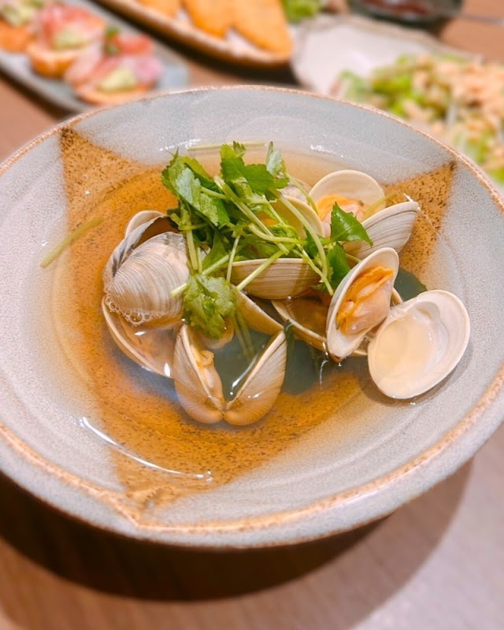
| 営業時間 | 月・火・水・木・金 16:00〜23:00 ／ 土・日 12:00〜23:00 |
|---|---|
| 定休日 | なし(要最終確認) |
| 住所 | 千葉県船橋市本町４丁目４５−９ |
| 予約 | 可 — ☎ 047-409-5522 ／ 公式サイト |
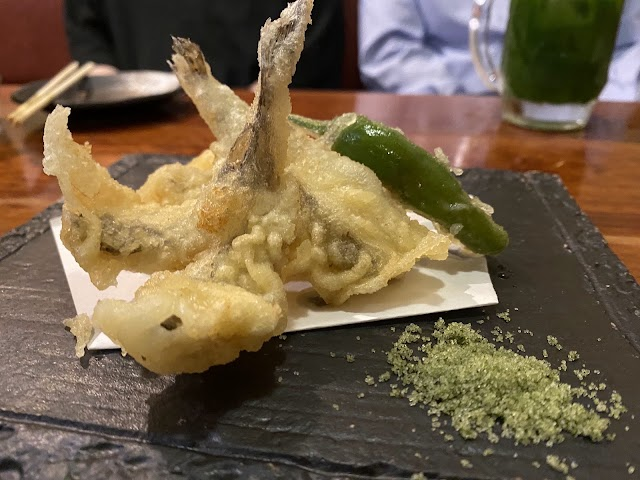
| 営業時間 | 月・火・水・木・金・土・日 16:00〜23:00 |
|---|---|
| 定休日 | なし(要最終確認) |
| 住所 | 千葉県船橋市本町５丁目６−１９ |
| 予約 | 可 — ☎ 047-426-0005 ／ 公式サイト |
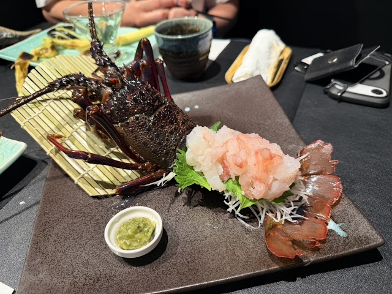
| 営業時間 | 月・火・木・金・土 18:00〜0:00 |
|---|---|
| 定休日 | 水・日曜 |
| 住所 | 千葉県船橋市本町１丁目１３−１ |
| 予約 | 可 — ☎ 047-401-8988 ／ 公式サイト |
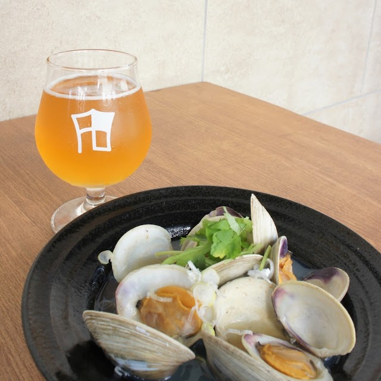
| 営業時間 | 火・水・木・金 16:00〜23:00 ／ 土・日 14:00〜23:00 |
|---|---|
| 定休日 | 月曜 |
| 住所 | 千葉県船橋市西船４丁目２９−９ |
| 予約 | 可 — ☎ 047-437-8888 ／ 公式サイト |
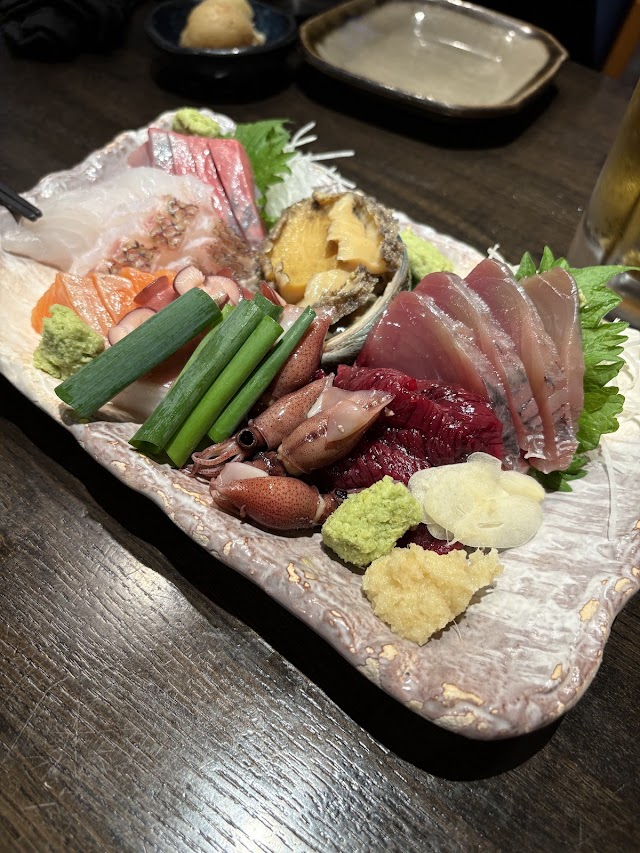
| 営業時間 | 月・火・水・木・金・土 17:30〜23:00 |
|---|---|
| 定休日 | 日曜 |
| 住所 | 千葉県船橋市西船４丁目２２−３ ２階 |
| 予約 | 可 — ☎ 047-410-1070 |
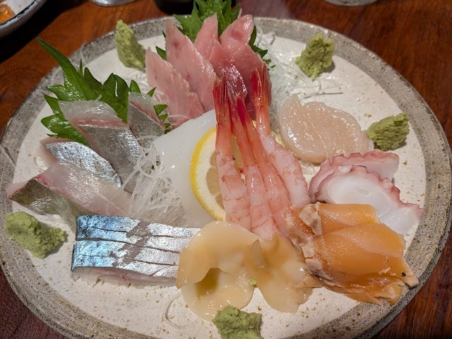
| 営業時間 | 火・水・木・日 17:00〜22:00 ／ 金・土 17:00〜23:00 |
|---|---|
| 定休日 | 月曜 |
| 住所 | 千葉県船橋市高根台４丁目２３−１９ 東海ビル高根台 1階 |
| 予約 | 可 — ☎ 047-461-0909 ／ 公式サイト |
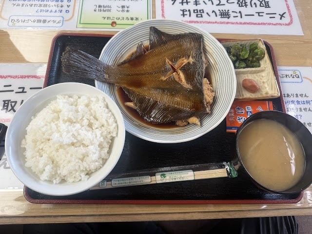
| 営業時間 | 月・火・水・木・金・土 11:00〜13:00, 17:00〜20:30 |
|---|---|
| 定休日 | 日曜 |
| 住所 | 千葉県船橋市三山６丁目４２−３ |
| 予約 | 要確認 |
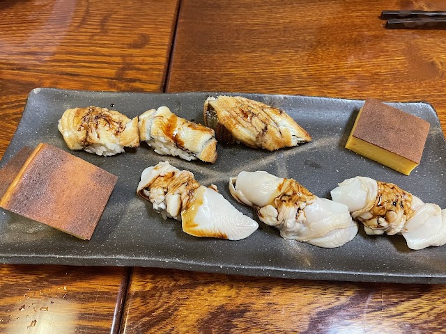
| 営業時間 | 月・火・木・金・土・日 17:00〜22:00 |
|---|---|
| 定休日 | 水曜 |
| 住所 | 千葉県船橋市本町４丁目３７−1-1F 柴田ビル |
| 予約 | 可 — ☎ 047-422-2717 ／ 公式サイト |
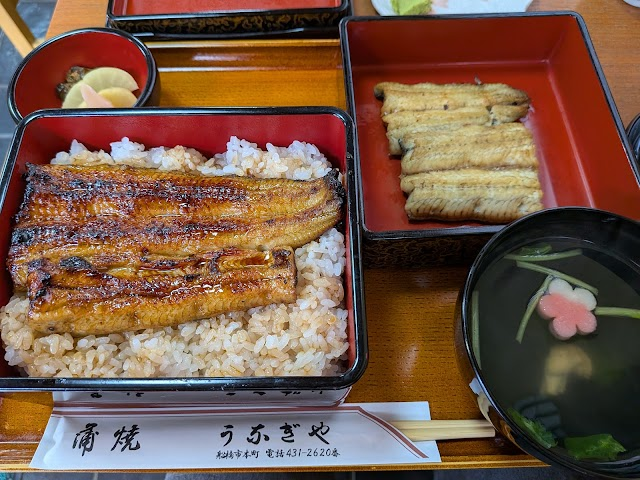
| 営業時間 | 月・木・金・日 11:00〜14:00 |
|---|---|
| 定休日 | 火・水・土曜 |
| 住所 | 千葉県船橋市本町２丁目１１−１５ |
| 予約 | 可 — ☎ 047-431-2620 ／ 公式サイト |
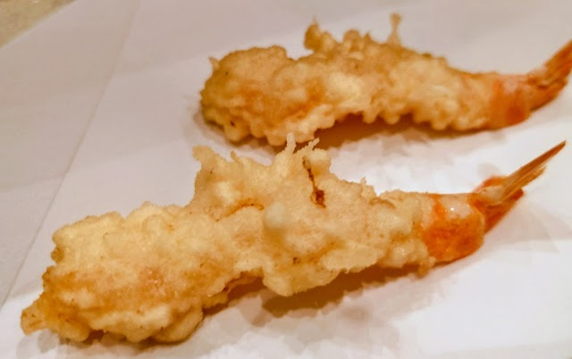
| 営業時間 | 月・火・水・木・金・土・日 11:30〜13:30, 17:30〜21:00 |
|---|---|
| 定休日 | なし(要最終確認) |
| 住所 | 千葉県船橋市本町２丁目６−１３ 船橋クレールビル 302 |
| 予約 | 可 — ☎ 047-432-0862 |
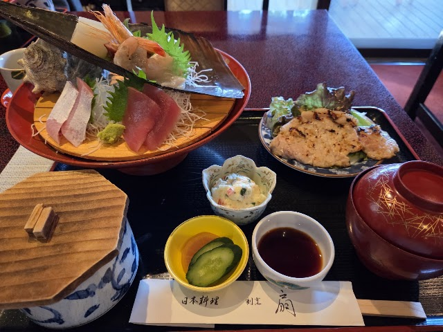
| 営業時間 | 月・火・水・木・金・土 11:45〜13:45, 17:00〜20:30 |
|---|---|
| 定休日 | 日曜 |
| 住所 | 千葉県船橋市本町７丁目１２−１１ |
| 予約 | 可 — ☎ 047-406-4425 ／ 公式サイト |
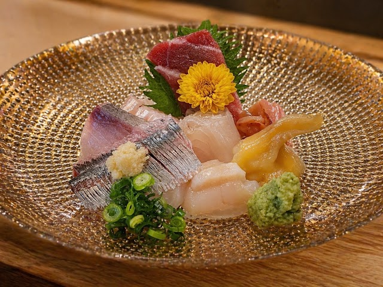
| 営業時間 | 月・火・水・木・金・土 17:00〜22:30 |
|---|---|
| 定休日 | 日曜 |
| 住所 | 千葉県船橋市本町４丁目４３−１４ クロシェットビル 101 |
| 予約 | 可 — ☎ 047-460-7181 ／ 公式サイト |
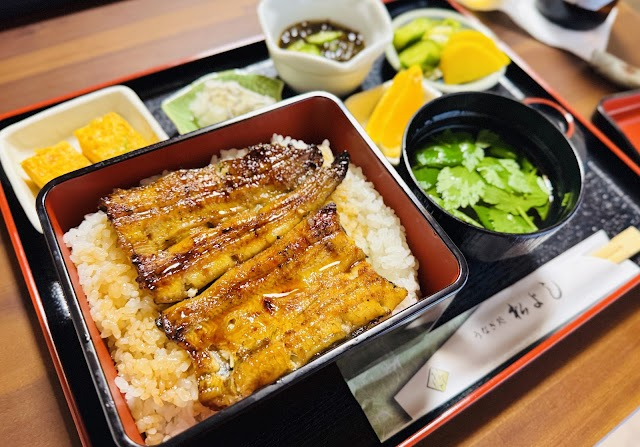
| 営業時間 | 水・木・金・土・日 11:00〜14:00, 17:00〜20:00 |
|---|---|
| 定休日 | 月・火曜 |
| 住所 | 千葉県船橋市印内２丁目１１−２９ |
| 予約 | 可 — 公式サイト |
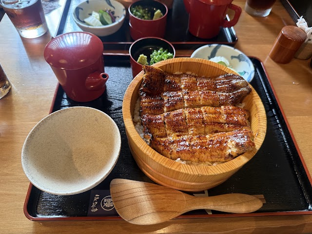
| 営業時間 | 火・水・金・土・日 11:00〜14:15 |
|---|---|
| 定休日 | 月・木曜 |
| 住所 | 千葉県船橋市前原西１丁目６−４ |
| 予約 | 可 — ☎ 047-470-5501 ／ 公式サイト |
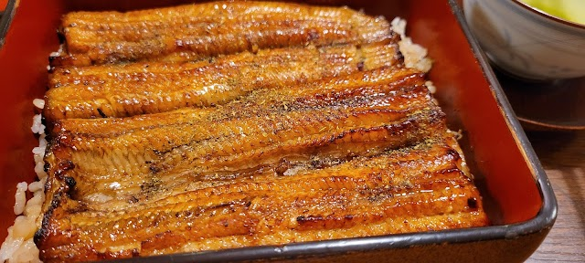
| 営業時間 | 月・火・金・土・日 11:30〜14:00, 17:00〜20:00 |
|---|---|
| 定休日 | 水・木曜 |
| 住所 | 千葉県船橋市夏見４丁目２２−６ |
| 予約 | 可 — ☎ 047-422-2540 |
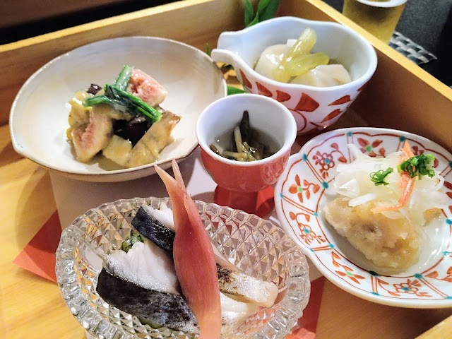
| 営業時間 | 月・水・木・金・土・日 11:30〜14:00, 17:00〜22:00 |
|---|---|
| 定休日 | 火曜 |
| 住所 | 千葉県船橋市大穴南２丁目４０−１６ |
| 予約 | 可 — ☎ 047-462-2884 |
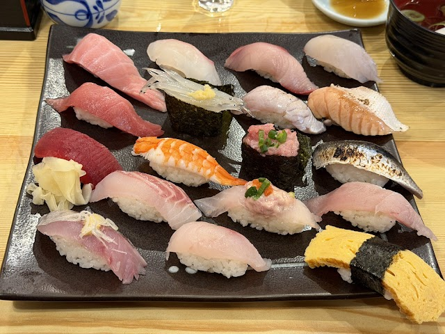
| 営業時間 | 火・水・木・金・土・日 11:00〜14:00, 16:00〜21:00 |
|---|---|
| 定休日 | 月曜 |
| 住所 | 千葉県船橋市本中山２丁目２２−１３ プラザレジデンス中山 １Ｆ |
| 予約 | 要確認 — ☎ 047-336-7028 ／ 公式サイト |
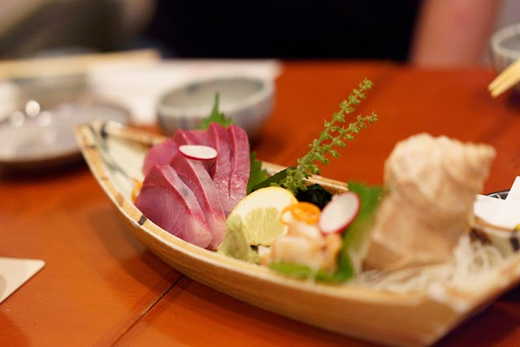
| 営業時間 | 火・水・木・金・土 11:00〜13:00, 17:30〜22:30 |
|---|---|
| 定休日 | 月・日曜 |
| 住所 | 千葉県船橋市本中山２丁目１４−１２ |
| 予約 | 可 — ☎ 047-332-3650 ／ 公式サイト |
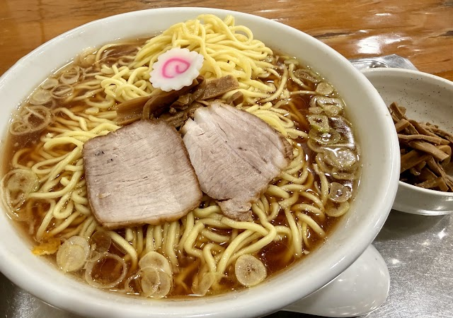
| 営業時間 | 月・火・水・木・金・土 11:00〜16:00 |
|---|---|
| 定休日 | 日曜 |
| 住所 | 千葉県船橋市湊町２丁目２−１９ |
| 予約 | 要確認 — ☎ 047-434-4104 ／ 公式サイト |
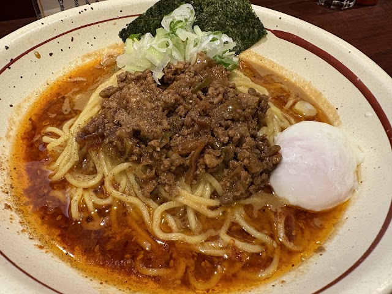
| 営業時間 | 火・水・木・金・土 11:00〜15:00, 18:00〜21:30 ／ 日 11:00〜15:00 |
|---|---|
| 定休日 | 月曜 |
| 住所 | 千葉県船橋市湊町２丁目７−３ １階 |
| 予約 | 可 — ☎ 047-431-1760 ／ 公式サイト |
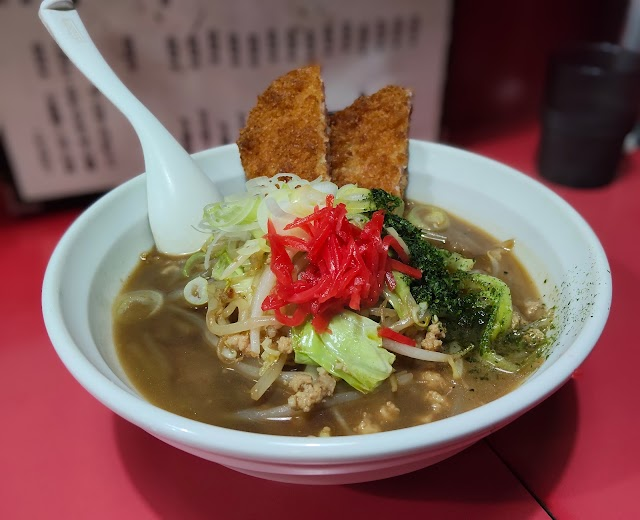
| 営業時間 | 火・日 11:30〜14:00 ／ 水・木・金・土 11:30〜14:00, 17:00〜20:30 |
|---|---|
| 定休日 | 月曜 |
| 住所 | 千葉県船橋市本町４丁目２０−１７ |
| 予約 | 要確認 — ☎ 047-422-8952 ／ 公式サイト |
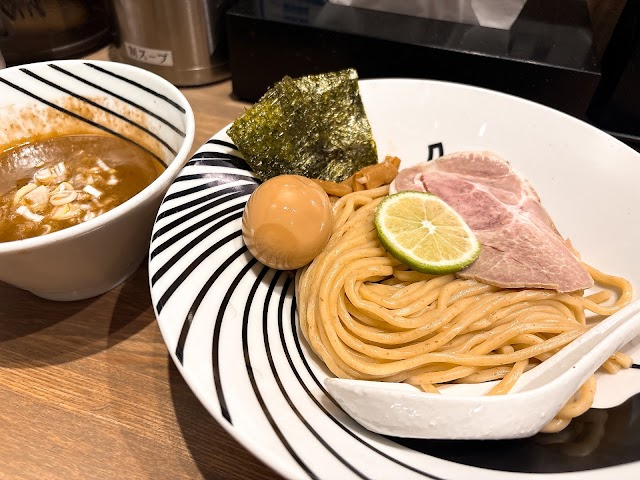
| 営業時間 | 月・火・水・木・金・土・日 11:00〜23:30 |
|---|---|
| 定休日 | なし(要最終確認) |
| 住所 | 千葉県船橋市本町１丁目３−１ フェイスビル １F |
| 予約 | 要確認 — ☎ 047-409-3221 ／ 公式サイト |
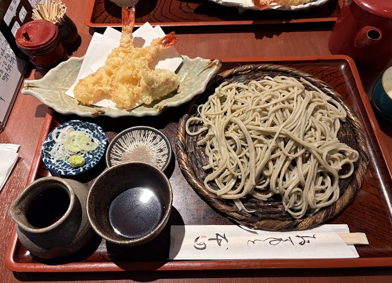
| 営業時間 | 火・水・木・金・土・日 11:30〜14:00, 17:30〜22:30 |
|---|---|
| 定休日 | 月曜 |
| 住所 | 千葉県船橋市本町４丁目４０−２３ |
| 予約 | 可 — ☎ 047-426-1722 |
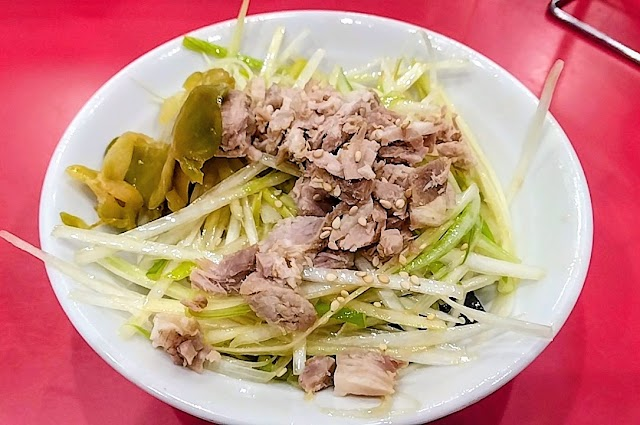
| 営業時間 | 月・火・水・木・金・土・日 9:00〜0:30 |
|---|---|
| 定休日 | なし(要最終確認) |
| 住所 | 千葉県船橋市印内町５９９−３ |
| 予約 | 要確認 — ☎ 047-434-7117 ／ 公式サイト |
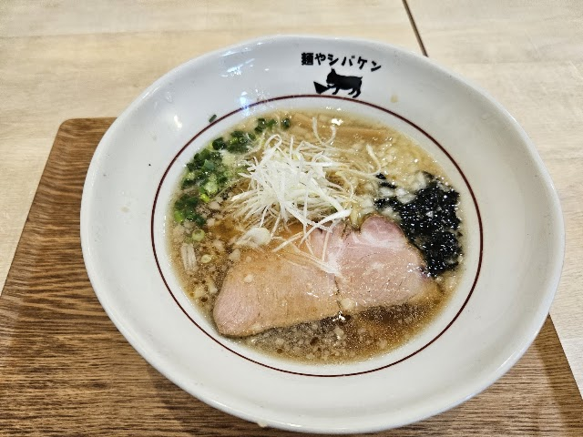
| 営業時間 | 月・火・水・木・金・土・日 11:00〜23:00 |
|---|---|
| 定休日 | なし(要最終確認) |
| 住所 | 千葉県船橋市本中山２丁目１６−９ |
| 予約 | 要確認 — ☎ 047-314-8766 ／ 公式サイト |
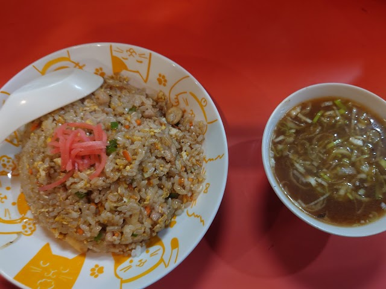
| 営業時間 | 月・水・木・金・土 11:30〜14:00, 17:30〜1:30 ／ 日 11:30〜14:00, 17:30〜0:30 |
|---|---|
| 定休日 | 火曜 |
| 住所 | 千葉県船橋市本中山３丁目２２−６ |
| 予約 | 要確認 — ☎ 047-333-9983 |
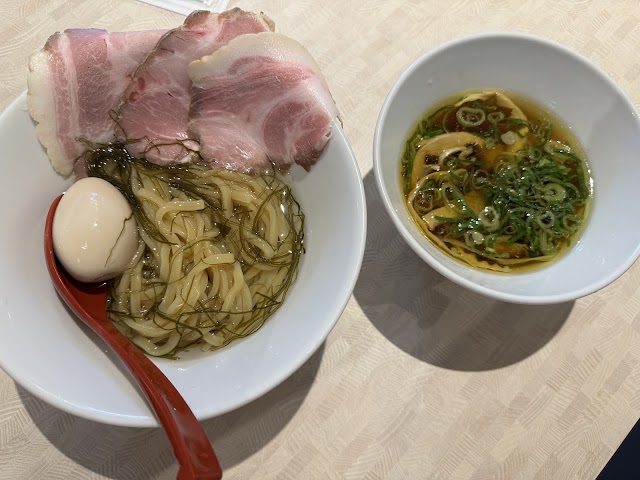
| 営業時間 | 月・火・水・木・金・土・日 11:00〜14:30, 17:30〜22:30 |
|---|---|
| 定休日 | なし(要最終確認) |
| 住所 | 千葉県船橋市前原西２丁目１３−１ 102 |
| 予約 | 要確認 — 公式サイト |
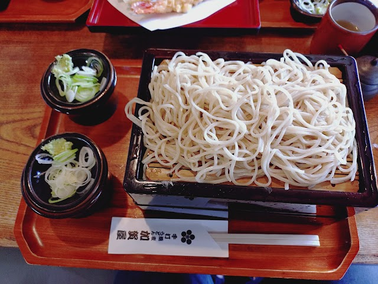
| 営業時間 | 月・木・金・土・日 11:00〜15:00, 17:00〜20:00 ／ 火 11:00〜14:30, 17:00〜20:00 |
|---|---|
| 定休日 | 水曜 |
| 住所 | 千葉県船橋市二和西６丁目１６−３５ |
| 予約 | 要確認 — ☎ 047-448-8967 |
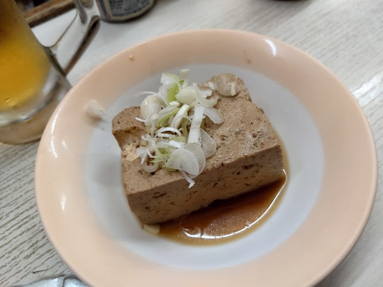
| 営業時間 | 月・金 14:00〜22:30 ／ 火・水・木 12:00〜22:30 ／ 土 12:00〜21:30 |
|---|---|
| 定休日 | 日曜 |
| 住所 | 千葉県船橋市本町４丁目４２−４ |
| 予約 | 要確認 — ☎ 047-422-5122 ／ 公式サイト |
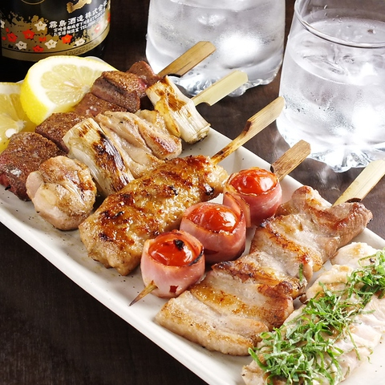
| 営業時間 | 月・火・水・木・金 16:00〜0:00 ／ 土 12:00〜0:00 ／ 日 12:00〜23:00 |
|---|---|
| 定休日 | なし(要最終確認) |
| 住所 | モリウチビル, １Ｆ, ４丁目-３-20 本町 船橋市 千葉県 273-0005 日本 |
| 予約 | 可 — ☎ 047-424-2448 ／ 公式サイト |
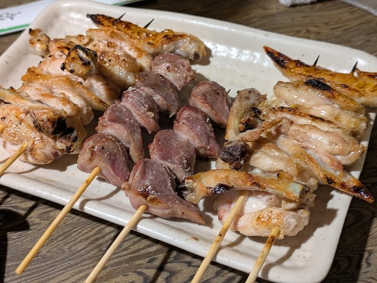
| 営業時間 | 月・火・水・木・金・土 17:00〜21:00 |
|---|---|
| 定休日 | 日曜 |
| 住所 | 千葉県船橋市本町１丁目３２−２ |
| 予約 | 可 — ☎ 047-424-5053 ／ 公式サイト |
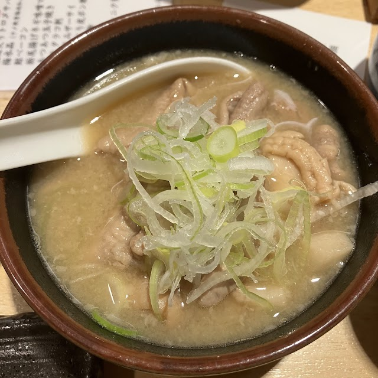
| 営業時間 | 月・火・水・木・金 17:00〜23:00 ／ 土 16:00〜23:00 ／ 日 16:00〜22:30 |
|---|---|
| 定休日 | なし(要最終確認) |
| 住所 | 千葉県船橋市本町４丁目４４−２ 東和ビル |
| 予約 | 可 — ☎ 047-422-5635 ／ 公式サイト |
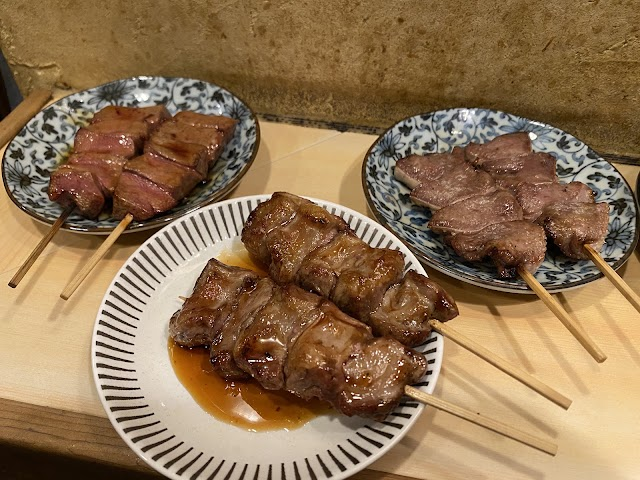
| 営業時間 | 火・水・木・金・土 15:00〜22:00 ／ 日 12:00〜19:00 |
|---|---|
| 定休日 | 月曜 |
| 住所 | 千葉県船橋市本町４丁目４２−５ |
| 予約 | 要確認 — 公式サイト |
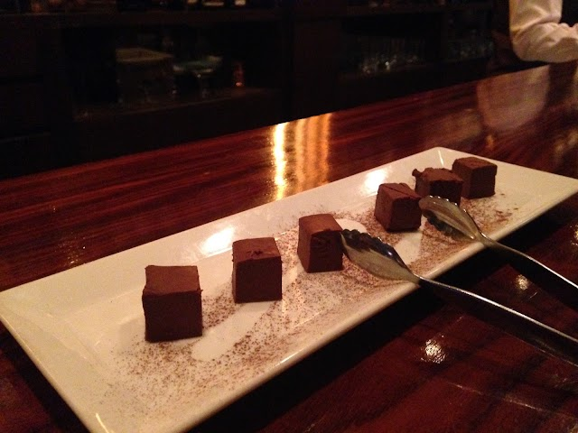
| 営業時間 | 月・火・水・木 17:00〜1:00 ／ 金・土 17:00〜2:00 |
|---|---|
| 定休日 | 日曜 |
| 住所 | 千葉県船橋市本町４丁目１６−３３ 山清ビル 2階 |
| 予約 | 可 — ☎ 047-425-5020 ／ 公式サイト |
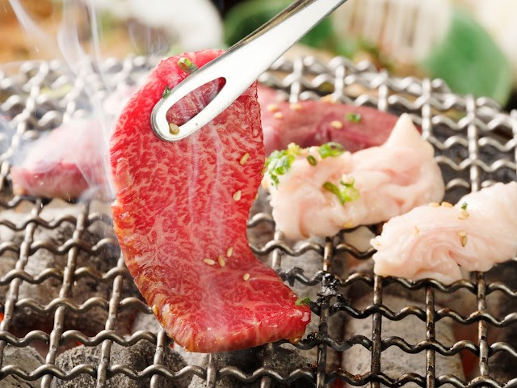
| 営業時間 | 火・水・金・土・日 17:00〜23:00 |
|---|---|
| 定休日 | 月・木曜 |
| 住所 | 千葉県船橋市葛飾町２丁目４０８−２ |
| 予約 | 可 — ☎ 047-407-2727 ／ 公式サイト |
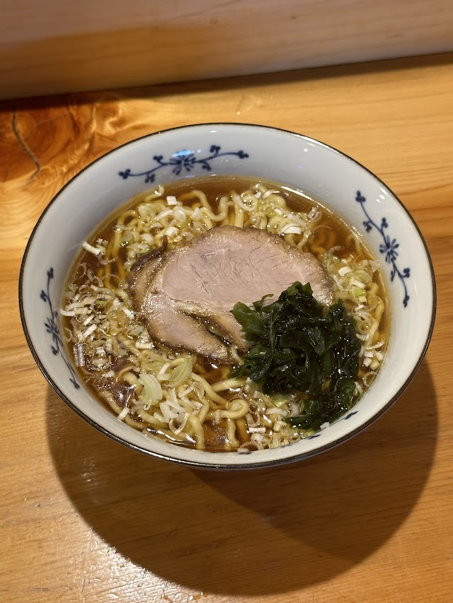
| 営業時間 | 月・火・木・日 19:00〜5:00 ／ 金・土 19:00〜7:00 |
|---|---|
| 定休日 | 水曜 |
| 住所 | 千葉県船橋市本中山２丁目１７−３４ |
| 予約 | 可 — ☎ 047-307-9609 ／ 公式サイト |
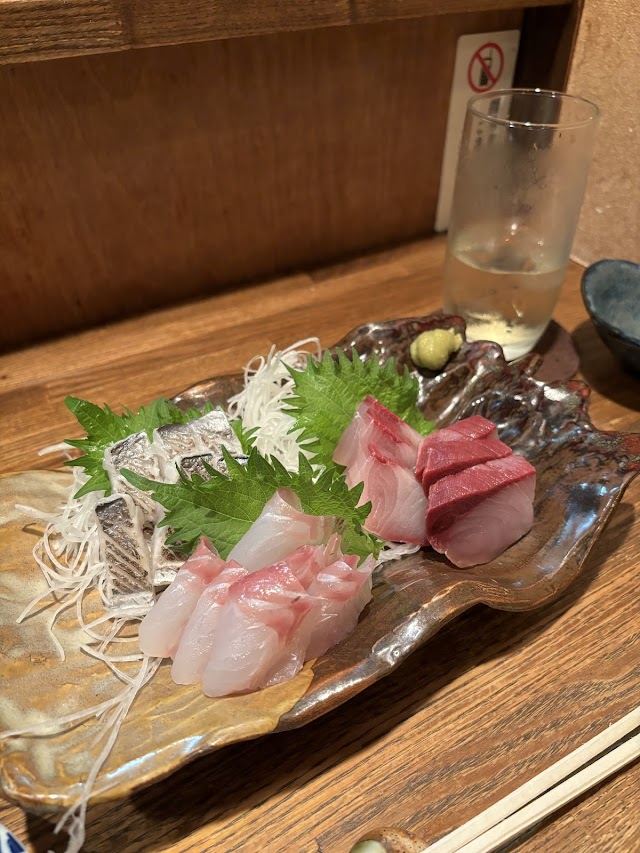
| 営業時間 | 月・火・水・木・金・土 17:30〜22:00 |
|---|---|
| 定休日 | 日曜 |
| 住所 | 千葉県船橋市前原西２丁目１７−１０ |
| 予約 | 可 — ☎ 047-471-5230 |
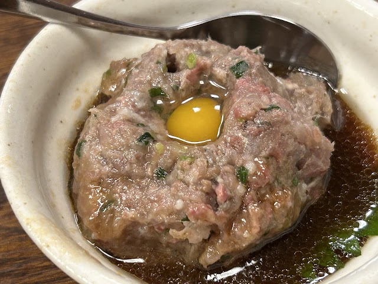
| 営業時間 | 火・水・木・金・土・日 17:00〜23:00 |
|---|---|
| 定休日 | 月曜 |
| 住所 | 千葉県船橋市東船橋１丁目３７−１２ |
| 予約 | 可 — ☎ 047-425-1851 ／ 公式サイト |
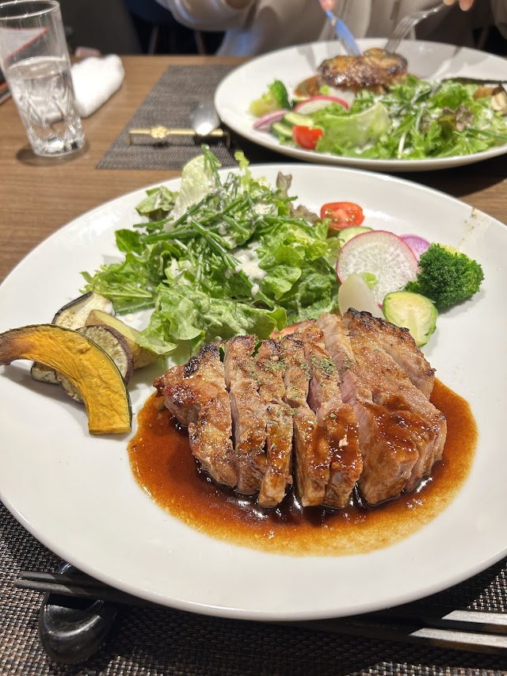
| 営業時間 | 月・木・金・土 11:30〜13:30, 18:00〜22:00 ／ 水 18:00〜22:00 ／ 日 11:30〜13:30, 18:00〜21:00 |
|---|---|
| 定休日 | 火曜 |
| 住所 | 千葉県船橋市本町４丁目３７−１９ ツガマンション １F |
| 予約 | 可 — ☎ 047-411-7844 ／ 公式サイト |
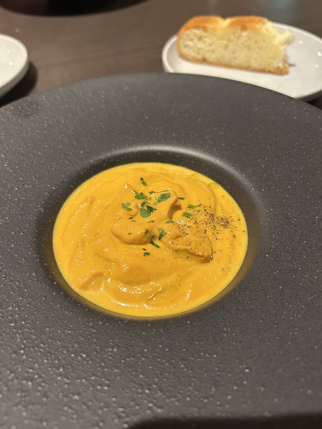
| 営業時間 | 月・火・木・金・土・日 11:30〜14:30, 17:00〜22:00 ／ 水 17:00〜22:00 |
|---|---|
| 定休日 | なし(要最終確認) |
| 住所 | 千葉県船橋市本町１丁目８−２ 2階 |
| 予約 | 可 — ☎ 070-8964-4845 ／ 公式サイト |
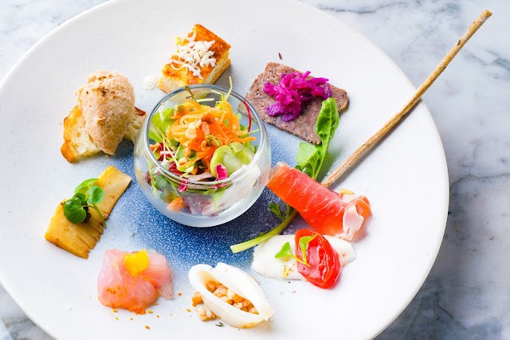
| 営業時間 | 水・木・金・土・日 11:30〜14:30, 17:30〜21:00 |
|---|---|
| 定休日 | 月・火曜 |
| 住所 | 千葉県船橋市宮本１丁目２０−１１ YCSビル 1階 |
| 予約 | 可 — ☎ 047-411-5572 ／ 公式サイト |
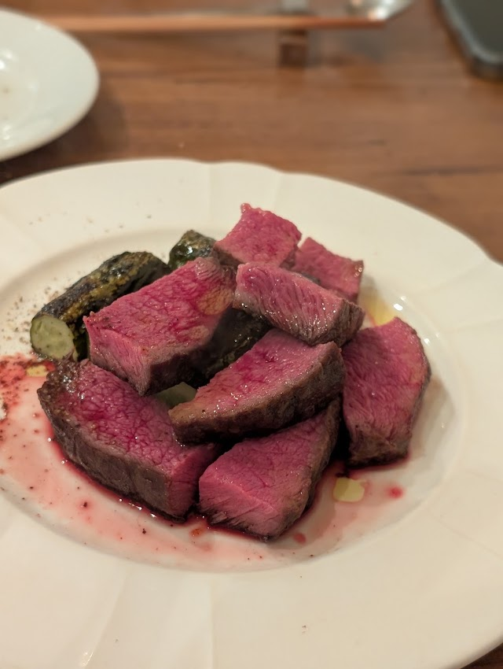
| 営業時間 | 火・水・木・金・土・日 17:00〜23:30 |
|---|---|
| 定休日 | 月曜 |
| 住所 | 千葉県船橋市本中山３丁目２０−３−１０３ 牧野店舗 |
| 予約 | 可 — ☎ 047-316-2081 ／ 公式サイト |
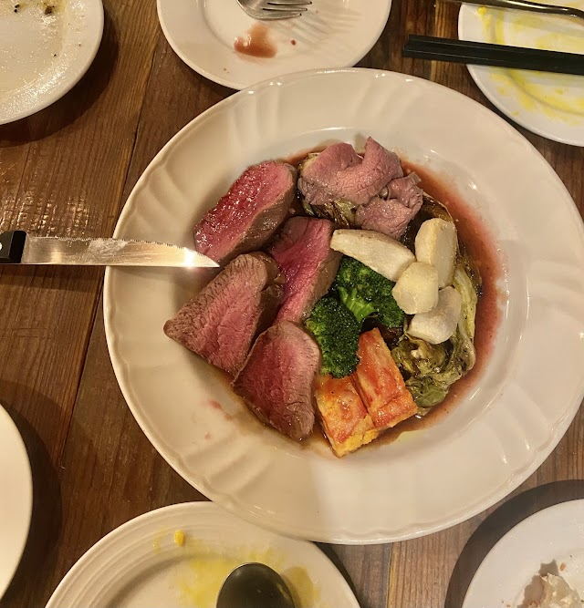
| 営業時間 | 月・火・水・木・金・土・日 17:00〜0:00 |
|---|---|
| 定休日 | なし(要最終確認) |
| 住所 | 千葉県船橋市西船４丁目２３−１１ |
| 予約 | 可 — ☎ 050-5462-2409 ／ 公式サイト |
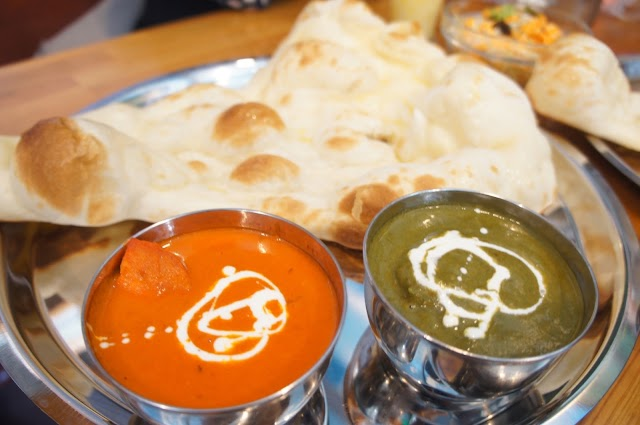
| 営業時間 | 月・火・水・木・金・土・日 11:00〜23:00 |
|---|---|
| 定休日 | なし(要最終確認) |
| 住所 | 千葉県船橋市西船４丁目２０−７ |
| 予約 | 可 — ☎ 047-779-1167 ／ 公式サイト |
| 営業時間 | 月・火・水・木・金・土 17:30〜0:00 |
|---|---|
| 定休日 | 日曜 |
| 住所 | 千葉県船橋市前原西２丁目１−５ |
| 予約 | 可 — ☎ 047-494-1137 ／ 公式サイト |
| 営業時間 | 月・水・木・金・土・日 11:00〜0:00 |
|---|---|
| 定休日 | 火曜 |
| 住所 | 千葉県船橋市坪井東１丁目２−３１ |
| 予約 | 可 — ☎ 070-5563-8477 ／ 公式サイト |
| 営業時間 | 火・水・木・土・日 11:00〜14:30, 17:00〜20:45 |
|---|---|
| 定休日 | 月・金曜 |
| 住所 | 千葉県船橋市行田１丁目４６−２０ |
| 予約 | 要確認 — ☎ 047-439-6431 ／ 公式サイト |
| 営業時間 | 火・木 11:00〜15:00 ／ 水・金・土 11:00〜15:00, 17:00〜21:00 |
|---|---|
| 定休日 | 月・日曜 |
| 住所 | 千葉県船橋市芝山６丁目５９−１２ |
| 予約 | 要確認 — 公式サイト |
| 営業時間 | 火・水・木・金 11:30〜14:30, 18:00〜22:00 ／ 土 11:30〜14:30, 18:00〜23:00 |
|---|---|
| 定休日 | 月・日曜 |
| 住所 | 千葉県船橋市習志野台４丁目５１−３ |
| 予約 | 可 — ☎ 047-466-3553 ／ 公式サイト |
| 営業時間 | 月・火・木・金・土・日 10:00〜18:30 |
|---|---|
| 定休日 | 水曜 |
| 住所 | 千葉県船橋市本町３丁目６−１ |
| 予約 | 要確認 — ☎ 047-422-2031 ／ 公式サイト |
| 営業時間 | 月・木・金・土・日 9:00〜18:00 |
|---|---|
| 定休日 | 火・水曜 |
| 住所 | 千葉県船橋市松が丘４丁目２３−１ |
| 予約 | 要確認 — ☎ 047-465-6716 ／ 公式サイト |
| 営業時間 | 月・火・水・木・金・土・日 10:00〜18:00 |
|---|---|
| 定休日 | なし(要最終確認) |
| 住所 | 千葉県船橋市本町２丁目２−１３ 滝口ビル 2階 |
| 予約 | 要確認 — ☎ 047-401-5950 ／ 公式サイト |
| 営業時間 | 月・火・水・木・金・土 8:00〜18:00 |
|---|---|
| 定休日 | 日曜 |
| 住所 | 千葉県船橋市本町２丁目１１−３２ |
| 予約 | 要確認 — ☎ 047-434-7551 |
| 営業時間 | 水・木・金・土・日 10:00〜19:00 |
|---|---|
| 定休日 | 月・火曜 |
| 住所 | 千葉県船橋市本町１丁目２１−１６ |
| 予約 | 要確認 — ☎ 047-437-8733 ／ 公式サイト |
| 営業時間 | 月・火・水・金・土・日 10:00〜19:30 |
|---|---|
| 定休日 | 木曜 |
| 住所 | 千葉県船橋市本町６丁目１２−９ 玉安ビル 1F |
| 予約 | 要確認 — ☎ 047-407-0502 ／ 公式サイト |
| 営業時間 | 月・火・水・木・金・土・日 12:00〜22:00 |
|---|---|
| 定休日 | なし(要最終確認) |
| 住所 | 千葉県船橋市西船５丁目１５−５ 2階 |
| 予約 | 要確認 — 公式サイト |
| 営業時間 | 火・水・木・金・土 10:00〜22:00 ／ 日 10:00〜22:30 |
|---|---|
| 定休日 | 月曜 |
| 住所 | 千葉県船橋市本中山３丁目２０−１４ |
| 予約 | 要確認 — 公式サイト |
| 営業時間 | 月・木・金・土・日 10:00〜18:00 |
|---|---|
| 定休日 | 火・水曜 |
| 住所 | 千葉県船橋市海神６丁目８−２ |
| 予約 | 要確認 — ☎ 047-434-8353 ／ 公式サイト |
| 営業時間 | 月・木・金・土・日 7:00〜15:00 |
|---|---|
| 定休日 | 火・水曜 |
| 住所 | 千葉県船橋市坪井東２丁目１４−２７ |
| 予約 | 要確認 — ☎ 047-497-8340 ／ 公式サイト |
| 営業時間 | 月 11:00〜17:00 ／ 水・木・金・土 10:00〜19:00 ／ 日 10:00〜18:00 |
|---|---|
| 定休日 | 火曜 |
| 住所 | 千葉県船橋市東船橋１丁目２３−１３ |
| 予約 | 要確認 — ☎ 047-424-2100 ／ 公式サイト |
本ガイドは個人利用目的で作成。掲載情報は2026年8月時点の調査に基づく。写真出典: Google Maps投稿写真(©各投稿者/Google)。